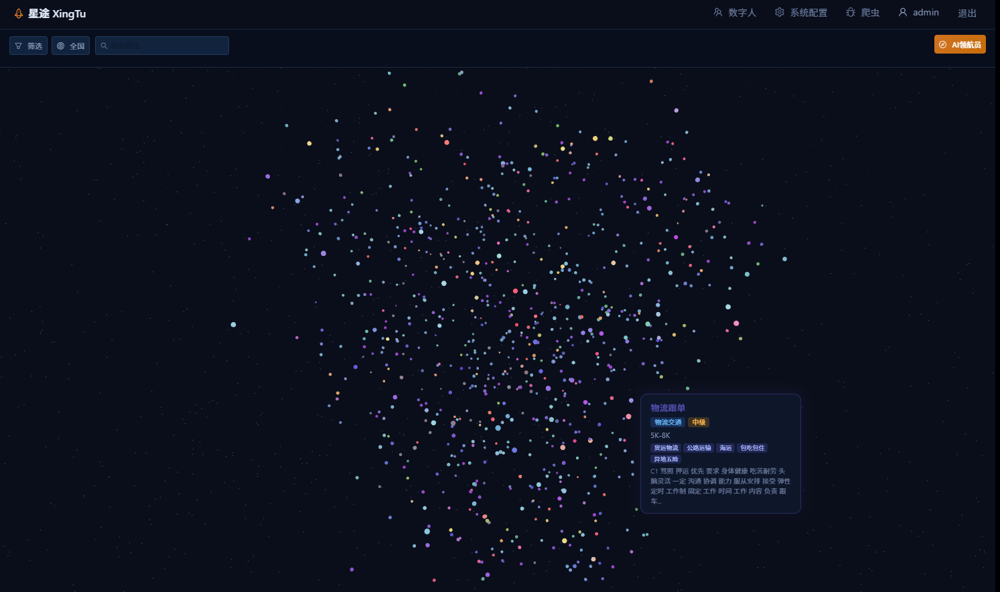
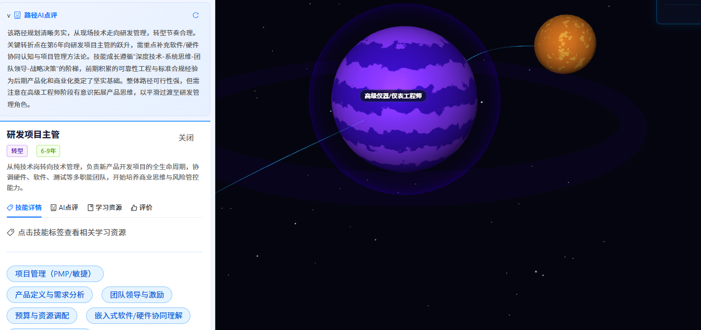
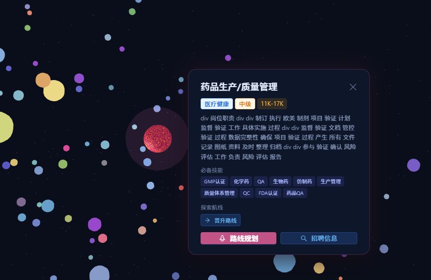
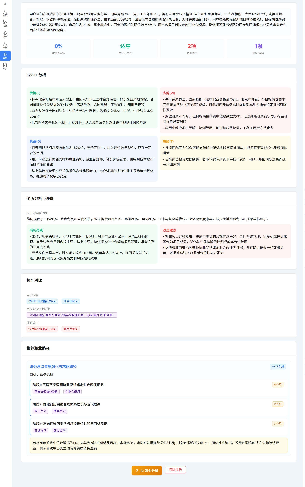
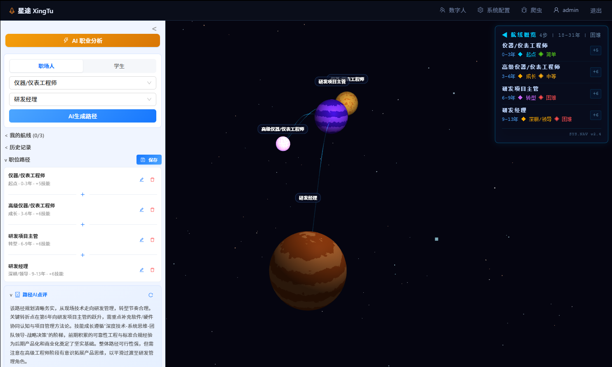
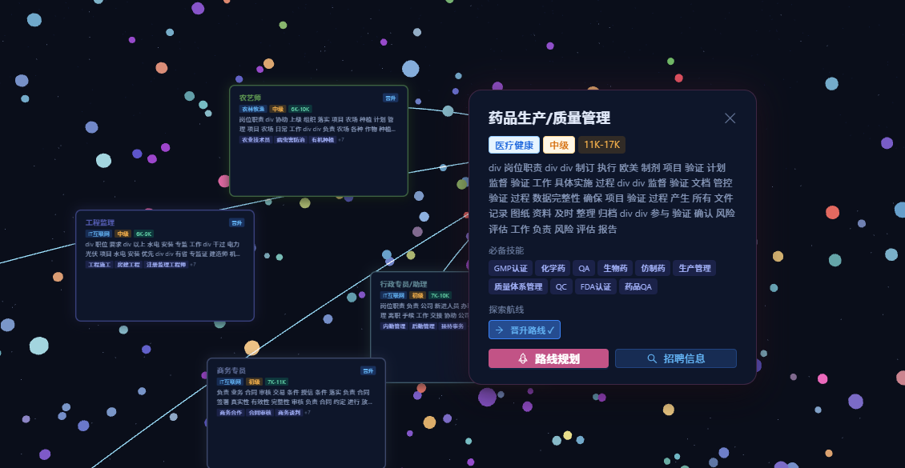
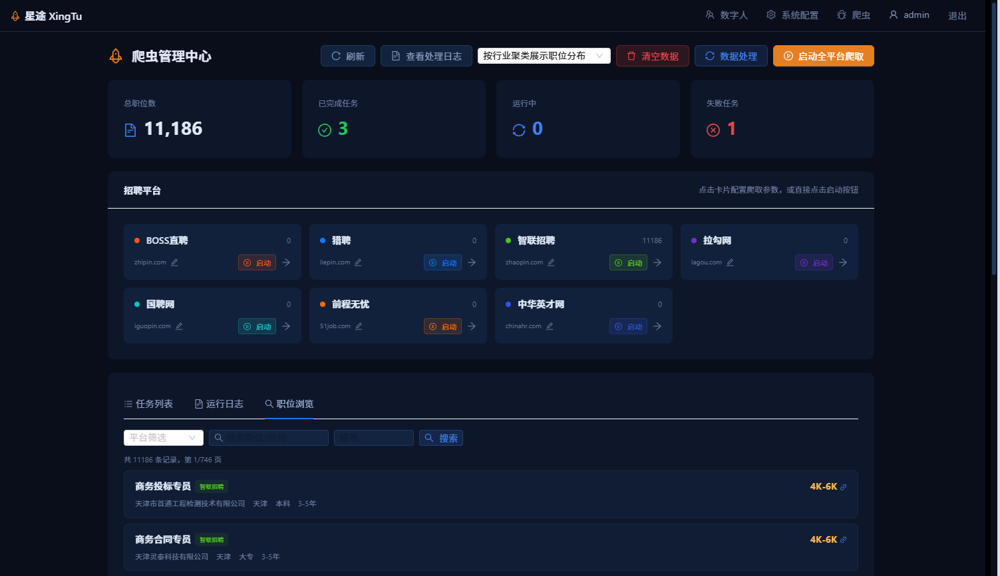
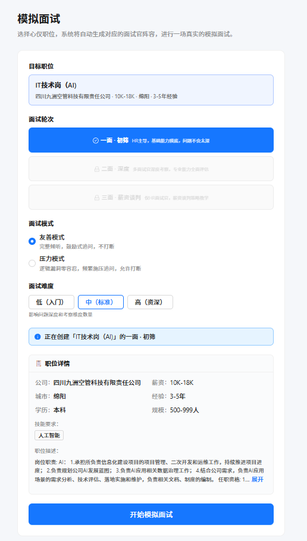
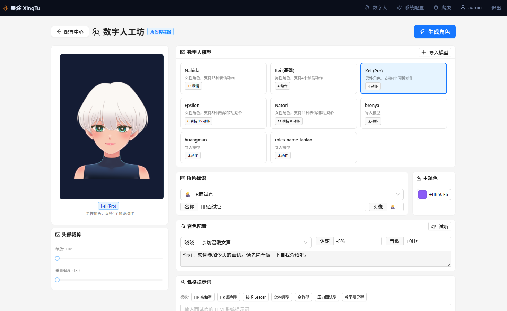
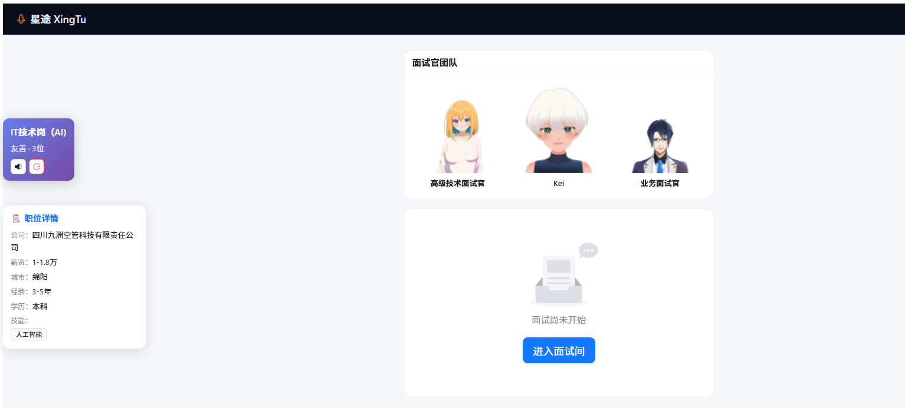

以职位为恒星，创造属于你的职场宇宙
一个以"职场宇宙"为视觉概念的 Web 网站。核心功能两块：一是 3D 职业星系浏览 + AI 路径规划，二是数字人模拟面试。PC 端体验优先，面试场景需要安静封闭的环境。
星球地图清晰呈现各职位在城市中的聚集程度，每一颗星球代表一个细分岗位，直观展示各城市、各行业的职位密度。







提供接近真实的面试体验。设置面试轮次、模式（友善/压力）、难度，数字人面试官实时交流、追问、检测回答偏离。



AI 职业分析将数周的自我摸索压缩到几分钟，每项结论都有真实数据支撑；数字人模拟面试支持追问、打断、偏离检测，把面试准备从"考前突击"变成"日常训练"。
降低职业信息壁垒，帮助年轻人建立清晰的职业认知；通过高还原度的模拟面试减少"面试恐惧"，提升求职信心。
后续接入招聘平台官方 API 实现职位实时同步；拓展勋章系统、个人画像、学习社区，让相同职业规划的用户组成"舰队"共同成长。